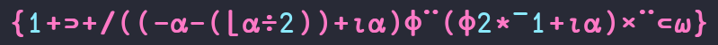
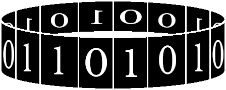
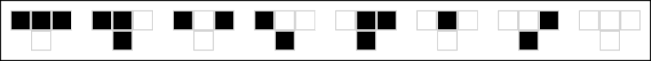
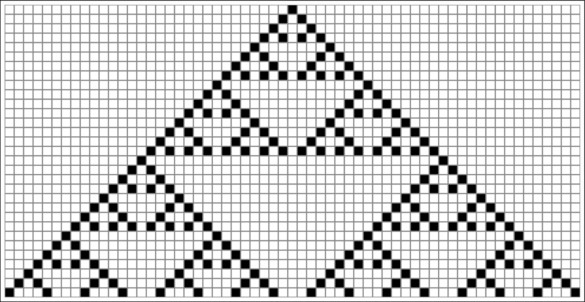

Neste post, pretendo tratar de Autômatos Celulares unidimensionais. Adquiri há alguns meses uma cópia do livro A New Kind of Science, de Stephen Wolfram. Enquanto não tenho ainda uma opinião definitiva sobre o livro (já que não o terminei), acho particularmente interessante o tópico dos autômatos celulares. Incentivado pela leitura deste livro, procurei desenvolver um pequeno conjunto de funções que tornasse possível inspecionar alguns autômatos e imprimi-los na tela.
Bem, na minha opinião, como ACs unidimensionais baseiam-se primariamente em vetores, nenhuma linguagem seria melhor de tratar deste problema que APL. Não pretendo fazer um discurso advogando esta linguagem, mas uso-a primariamente porque os programas ficam extremamente sucintos; cada função é como uma expressão matemática, economizando linhas. E eu particularmente acho APL muito bonita.
Para os exemplos a seguir, utilizarei Dyalog APL ao invés de GNU APL, porque já me acostumei com este primeiro dialeto.
Ah! Este post é uma espécie de "tutorial rápido" de APL. Ao contrário do que já fiz anteriormente por aqui, desta vez, vou explicar o passo-a-passo das operações mais simples, para que você possa compreender melhor a linguagem.
ACHTUNG!
Já falei disso no meu último post sobre APL, mas é importante que você tenha uma fonte compatível instalada no seu dispositivo ou computador. Por exemplo, veja se esta imagem…

Figura 1: Uma expressão em Dyalog APL.
…corresponde ao código a seguir:
{1+⊃+/((-⍺-(⌊⍺÷2))+⍳⍺)⌽¨(⌽2*¯1+⍳⍺)ר⊂⍵}
Se você não conseguir ver os caracteres no exemplo acima, então você não conseguirá ler o restante deste post. Se este for o caso, recomendo utilizar a fonte GNU FreeFont, ou alguma das fontes recomendadas para Dyalog APL que estão aqui.
ACs Unidimensionais
Vamos repassar um pouco sobre o que são autômatos celulares e a importância deles. Repetindo um pouco o que já disse nesta apresentação, autômatos celulares são sistemas dinâmicos discretos e espacialmente estendidos, que têm sido estudados extensivamente como modelos de processos físicos e como dispositivos computacionais1. Focando neste mesmo aspecto computacional, podemos enxergar ACs como uma forma de falar de computação paralela, de uma forma bem rudimentar.
Como estamos tratando de ACs unidimensionais, imagine que temos uma fita, completamente dividida em partes iguais. Cada uma destas partes será uma célula.
A seguir, para os propósitos do nosso experimento, imagine que esta fita tem seu fim e seu início conectados, sendo portanto circular – ou seja, imagine que esta fita está ao redor de uma lata, de um jeito que não possamos identificar qual é a primeira ou a última célula dela (vide Figura 2).

Figura 2: Exemplo de uma fita circular de células. Cada número nas células representa o estado da célula atual.
Em cada parte desta fita, teremos um número, que representa o estado
de sua célula. Para facilitarmos, tomaremos o número 0 representando o
estado de uma célula morta, e o número 1 representando o estado de uma
célula viva.
Adicionalmente, teremos regras fixas baseadas na vizinhança de uma certa célula, que definirão qual será o estado da mesma no próximo passo de tempo. Ou seja, para sabermos se uma célula permanecerá viva ou morta, levamos em consideração seu atual estado e os estados de seus vizinhos à esquerda e à direita (em outras palavras, trataremos de uma vizinhança de três células).
Vou começar criando uma fita deste tipo, em APL. Para tanto, vou representá-la em um vetor:
r←¯5⌽1,(10⍴0)
Se isto pareceu estranho, não se preocupe. Explicarei o que está acontecendo logo a seguir.
Destrinchando a criação do vetor
Vamos parar um pouco. Vou tentar mostrar de uma forma melhor o que estou fazendo.
APL, como eu disse, envolve criar expressões que façam a computação que precisamos. Assim, programar em APL é algo incremental, no sentido de que escrevemos expressões simples e vamos adicionando operações até que os dados tornem-se o que precisamos.
A expressão a seguir
10⍴0
Cria, com ajuda da função rho (⍴), um vetor de 10 elementos, onde
todos são zeros:
0 0 0 0 0 0 0 0 0 0
Em seguida, catenamos um número 1 ao início deste vetor, aumentando
seu tamanho, e transformando-o em um vetor de 11 elementos, onde todos
os números são zeros, exceto o primeiro:
1,(10⍴0) 1 0 0 0 0 0 0 0 0 0 0
Veja que esta operação envolve reescrever a expressão adicionando algo. Isto é facilitado no ambiente de Dyalog APL, pois podemos voltar a expressões, reescrevê-las e fazer com que o ambiente as interprete ao final, como se tivessem sido ali escritas.
Em geral, a expressão escrita possuirá sempre um recuo à sua esquerda, enquanto seu resultado estará logo abaixo, sem recuo. Usarei esta escrita aqui, pois ela se assemelha ao console interativo de Dyalog APL e de GNU APL.
Em seguida, lembre-se de que este vetor representa, na realidade, um
cilindro (como visto na Figura 2). Assim, se rotacionarmos
este cilindro cinco células para a direita, colocaremos o número 1,
que estava no início, no exato meio do nosso vetor.
Isto pode ser feito com uma rotação horizontal (⌽) de -5 casas no
vetor. Veja como APL faz isso:
¯5⌽1,(10⍴0) 0 0 0 0 0 1 0 0 0 0 0
A única coisa restante é salvar este vetor em uma variável, que
daremos o nome de r.
r←¯5⌽1,(10⍴0)
ACs em APL
Agora que temos um vetor no qual podemos testar nossos algoritmos, vamos programar algumas regras básicas de autômatos celulares unidimensionais que possamos utilizar também.
Rule 90
A Rule 90 é uma regra interessante, porque é capaz de gerar um fractal chamado Triângulo de Sierpinski.
Usando a notação visual de Wolfram2, podemos expressá-la assim:

Figura 3: Visualização gráfica da Rule 90. Fonte: Wolfram (2002; adaptado).
Na figura acima, células pretas estão vivas, enquanto células brancas estão mortas.
A regra é expressada como oito situações possíveis, condizentes com as oito vizinhanças possíveis, para uma vizinhança de três células (vizinho esquerdo, célula atual, e vizinho direito).
Em cada situação, o estado atual da vizinhança é representado pelos três quadrados de cima, e o estado que a célula ao meio da vizinhança assumirá no próximo passo será o mesmo estado representado pelo quadrado solitário, na segunda linha.
Por exemplo, na Rule 90, caso uma célula esteja viva e seus dois vizinhos estejam também vivos, esta célula morrerá (veja o caso mais à esquerda na Figura 3).
Podemos gerar um gráfico, onde cada linha representa uma nova fita de células, após aplicarmos as regras do autômato celular à linha logo acima da mesma.
Para uma linha inicial com apenas uma célula viva ao centro, teremos um desenho similar a este:

Figura 4: Evolução da Rule 90 através do tempo. Fonte: Wolfram (2002; adaptado)
Construindo a Rule 90 em APL
Vamos passo a passo criar uma expressão em APL que possa ser transformada em uma função; esta função deverá tomar um vetor arbitrário e binário qualquer, e retornar um novo vetor com o próximo passo do autômato celular Rule 90.
Primeiro, começamos com nosso vetor inicial.
r 0 0 0 0 0 1 0 0 0 0 0
Em seguida, criaremos um vetor com dois elementos; cada elemento será
uma cópia de r.
r r 0 0 0 0 0 1 0 0 0 0 0 0 0 0 0 0 1 0 0 0 0 0
Agora, faremos com que o primeiro vetor seja rotacionado uma casa para a direita, e que o segundo vetor seja rotacionado uma casa para a esquerda.
Normalmente aplicaríamos uma rotação horizontal (⌽) a cada um, mas
podemos simplesmente distribuir rotações a -1 e 1 para cada respectivo
vetor, através de rotate each (⌽¨). Veja:
¯1 1⌽¨r r 0 0 0 0 0 0 1 0 0 0 0 0 0 0 0 1 0 0 0 0 0 0
Agora, somaremos ambos os vetores, elemento a elemento, de forma a
criar um só, através de uma redução com somatório (+/):
+/¯1 1⌽¨r r 0 0 0 0 1 0 1 0 0 0 0
Vamos fazer uma pausa aqui e contemplar o que temos até
então, comparando r a esse resultado parcial:
r => 0 0 0 0 0 1 0 0 0 0 0 parcial => 0 0 0 0 1 0 1 0 0 0 0
Se observarmos com bastante atenção, veremos que parcial nada mais é
que a quantidade de vizinhos vivos de cada célula respectiva de r.
Se experimentarmos isso com um novo vetor z, com três números 1 ao
centro, obteremos o seguinte:
z←¯5⌽1 1 1,(10⍴0) z ⍝ Novo vetor z 0 0 0 0 0 1 1 1 0 0 0 0 0 +/¯1 1⌽¨z z ⍝ Vetor parcial 0 0 0 0 1 1 2 1 1 0 0 0 0
Mais explicitamente, compare:
z => 0 0 0 0 0 1 1 1 0 0 0 0 0 parcial => 0 0 0 0 1 1 2 1 1 0 0 0 0
Isto é algo muito bom. Uma vez que temos a contagem de vizinhos vivos à esquerda e à direita de uma célula, podemos tomar um atalho interessante na Rule 90.
Observando a Figura 3, podemos ver que o estado da célula atual não é verdadeiramente importante para esta regra. Assim, não precisamos levar em consideração a célula atual.
Também não precisamos levar em consideração quais vizinhos estão vivos, pois a Rule 90 parece operar apenas com uma quantidade exata de vizinhos vivos.
Assim, temos uma única frase que resume a Rule 90: uma célula só permanecerá viva se tiver exatamente um vizinho vivo.
Isto pode ser feito através de comparar cada um dos elementos do vetor
resultante com o número 1, da seguinte forma:
1=+/¯1 1⌽¨r r 0 0 0 0 1 0 1 0 0 0
Em APL, toda vez que realizamos uma comparação entre um escalar e um
vetor, o vetor é implicitamente percorrido, e cada elemento é
comparado com o escalar fornecido (neste caso, 1). Como resposta,
recebemos um novo vetor, contendo a resposta de cada comparação. Em
APL, true e false estão diretamente relacionados a 1 e 0,
respectivamente, portanto nosso novo vetor também é populado por 1's e
0's.
Com isso, temos nossa nova expressão que calcula o próximo estado da Rule 90 para uma fita circular. Veja que em nenhum momento mencionamos o tamanho do vetor, portanto a expressão independe do tamanho do mesmo.
Podemos melhorar um pouco nossa expressão. O resultado, na verdade, é um vetor encapsulado, que podemos desencapsular com uma operação de disclose:
⊃1=+/¯1 1⌽¨r r 0 0 0 0 1 0 1 0 0 0 0
E também podemos evitar a repetição do vetor r através do
encapsulamento do mesmo, o que fará com que as rotações sejam
distribuídas para quantas cópias de r sejam necessárias, através da
operação enclose:
⊃1=+/¯1 1⌽¨⊂r 0 0 0 0 1 0 1 0 0 0 0
Tudo o que resta é transformar esta expressão em uma função
propriamente dita. Para tanto, vamos substituir r pelo parâmetro
formal ⍵, e colocar a expressão no escopo de uma expressão lambda, ou
seja, de uma função inline:
{⊃1=+/¯1 1⌽¨⊂⍵}
Esta expressão pode então ser atribuída a um nome qualquer. Neste
caso, chamaremos ela de rule90.
rule90←{⊃1=+/¯1 1⌽¨⊂⍵}
Generalizando as regras
Há algum tempo atrás, criei algumas funções para generalizar a criação de regras de autômatos celulares, cujos estados sejam apenas vivos ou mortos.
A expressão findrule a seguir…
findrule←{1+⊃+/((-⍺-(⌊⍺÷2))+⍳⍺)⌽¨(⌽2*¯1+⍳⍺)ר⊂⍵}
..é uma função diádica (tomando dois argumentos; um à esquerda e um à
direita). Seu primeiro argumento enumera a quantidade de elementos na
vizinhança, sendo sempre ímpar; seu segundo argumento toma um vetor
arbitrário de 0's e 1's.
Assim, se aplicarmos findrule a 3 e ao nosso vetor r
3 findrule r 1 1 1 1 2 3 5 1 1 1 1
veremos que cada um dos elementos se enquadra em um caso de qualquer
regra arbitrária que sirva para uma vizinhança de três elementos; se
contarmos os casos da Figura 3 da direita para a esquerda,
começando de 1, teremos um paralelo com a Rule 90, por exemplo.
Explicarei melhor o funcionamento de findrule ao final deste artigo,
pois não é de entendimento trivial.
Para facilitar, podemos especificar findrule apenas para situações de
uma vizinhança de três elementos. O operador jot (∘) liga
permanentemente o valor 3 a uma cópia da função findrule, produzindo
uma nova função, no processo, que demande apenas um único
parâmetro. Nomearemos esta função como findrule3:
findrule3←3∘findrule
Por fim, vamos especificar uma função que toma apenas um vetor com os
números das regras onde a célula permanece viva, e substitui os
números do resultado de findrule3 por 1 ou 0, dependendo da existência
do estado em questão no vetor informado a essa função.
do_rule3←{(findrule3 ⍺)⌷¨⊂⌽(⍳8)∊⍵}
Por exemplo, podemos emular a aplicação de rule90 em r através do uso
de do_rule3 para os casos 2, 4, 5 e 7, que são os números dos casos de
vizinhança para os quais a célula em questão sobrevive (vide a Figura 3):
rule90 r 0 0 0 0 1 0 1 0 0 0 0 r do_rule3 2 4 5 7 0 0 0 0 1 0 1 0 0 0 0
Criando mais regras de ACs
Com estas simples funções podemos, finalmente, criar outros autômatos celulares à base de simples generalização. Vejamos como podemos criar outras regras:
rule30 ← {⍵ do_rule3 4 5 6 7} ⍝ Aleatório rule110 ← {⍵ do_rule3 2 3 5 6 7} ⍝ Estruturas localizadas rule250 ← {⍵ do_rule3 1 2 3 4 5 7} ⍝ Repetição rule254 ← {⍵ do_rule3 1 2 3 4 5 6 7} ⍝ Repetição
Segundo Wolfram (2002) e Mitchell, Hraber e Crutchfield (1993), autômatos celulares podem se classificar de algumas formas, quanto mais se aproximam da ideia de caos, sendo estruturas extremamente recorrentes na natureza também.
Vamos criar mais algumas funções e estruturas para nos ajudar a visualizar estas classificações.
Representação visual
Começamos atribuindo uma função qualquer de autômato celular a uma
variável global fn em nosso workspace. Poderemos trocar esta função à
medida que for necessário.
fn←rule90
Finalmente, criarei uma função que gera uma matriz de evolução de uma fita de acordo com uma certa quantidade de gerações informada.
genboard←{board←⍺⋄{(fn⍣⍵)board}¨(⍵ 1)⍴¯1+⍳⍵}
A matriz gerada é similar à Figura 4, porém numérica:
r genboard 10 0 0 0 0 0 1 0 0 0 0 0 0 0 0 0 1 0 1 0 0 0 0 0 0 0 1 0 0 0 1 0 0 0 0 0 1 0 1 0 1 0 1 0 0 0 1 0 0 0 0 0 0 0 1 0 1 0 1 0 0 0 0 0 1 0 1 1 0 0 1 0 0 0 1 0 0 1 1 1 1 0 1 0 1 0 1 1 1 0 0 1 0 0 0 0 0 1 0 0 0 1 0 1 0 0 0 1 0 1 0
Podemos abstrair isso mais um pouco, trocando os 0's pelo caractere
de espaço e os 1's pelo caractere o minúsculo, através desta função:
showboard←{{' o'[1+⍵]}¨(⍺ genboard ⍵)}
O resultado é uma representação que lembra mais ainda a Figura 4:
r showboard 10
o
o o
o o
o o o o
o o
o o o o
o o o o
ooo o o ooo
o o
o o o o
Representando outros autômatos visualmente
Podemos usar nova representação visual para testar nossos outros autômatos celulares.
Vamos começar atribuindo a r um novo vetor de 51 elementos, onde
apenas a célula do meio está viva:
r←¯25⌽1,(50⍴0)
A Rule 30 é conhecida por representar um AC aleatório, ou seja, gera estruturas aleatórias em seu desenvolvimento. É, portanto, uma boa representação de comportamento caótico:
fn←rule30 ⋄ r showboard 20 o ooo oo o oo oooo oo o o oo oooo ooo oo o o o oo oooo oooooo oo o ooo o oo oooo oo o ooo oo o o oooo oo o oo oooo oo o o oooo oo o ooo oo oo o o oo oooo oo ooo ooo oo ooo oo o o ooo o ooo o o oo oooo oo o o ooooo ooooooo oo o ooo oooo o ooo o oo oooo oo ooo oo oo o ooo oo o o ooo o oo ooo oooo oo o oo oooo oo o oooooo o o ooo oooo
A Rule 110 é conhecida por ser Turing-completa, ou seja, dada uma entrada adequada, é capaz de simular uma Máquina de Turing.
Como sua evolução ocorre para a "esquerda", criarei um novo vetor ad
hoc de 21 elementos, onde apenas o elemento mais à direita vale 1.
A Rule 110, é, portanto, um sistema à beira do caos, onde podemos ainda observar estruturas localizadas em meio a comportamento caótico.
fn←rule110 ⋄ (1⌽1,(20⍴0)) showboard 20 o oo ooo oo o ooooo oo o ooo oo oo o ooo ooooooo o oo ooo ooo oo o oo o ooooo ooooo oo o oo o ooo oo ooo oooo o ooo oo o oo ooooo o oooooooo oo ooo oo oooo oo o ooo oo o ooooo oo o ooo oooo o
As Rules 250 e 254 constituem-se de padrões de repetição mais simples, e um pouco menos interessantes.
fn←rule250 ⋄ r showboard 20 o o o o o o o o o o o o o o o o o o o o o o o o o o o o o o o o o o o o o o o o o o o o o o o o o o o o o o o o o o o o o o o o o o o o o o o o o o o o o o o o o o o o o o o o o o o o o o o o o o o o o o o o o o o o o o o o o o o o o o o o o o o o o o o o o o o o o o o o o o o o o o o o o o o o o o o o o o o o o o o o o o o o o o o o o o o o o o o o o o o o o o o o o o o o o o o o o o o o o o o o o o o o o o o o o o
fn←rule254 ⋄ r showboard 20 o ooo ooooo ooooooo ooooooooo ooooooooooo ooooooooooooo ooooooooooooooo ooooooooooooooooo ooooooooooooooooooo ooooooooooooooooooooo ooooooooooooooooooooooo ooooooooooooooooooooooooo ooooooooooooooooooooooooooo ooooooooooooooooooooooooooooo ooooooooooooooooooooooooooooooo ooooooooooooooooooooooooooooooooo ooooooooooooooooooooooooooooooooooo ooooooooooooooooooooooooooooooooooooo ooooooooooooooooooooooooooooooooooooooo
Conclusão
Muito foi explorado até aqui, no sentido dos padrões e da informação que poderiam ser criados. O mais interessante é que este processo quase não demandou linhas de código.
Na minha apresentação, mostrei formas de codificar a rule90, como
feito anteriormente, usando as mesmas ideias, porém em Common Lisp e
em C++; foram bem mais trabalhosas em termos de quantidade de código
escrito, mesmo operando sobre suas respectivas estruturas de dados
mais acessíveis (listas e std::vector, respectivamente). Todavia, pude
transportar a ideia por trás do algoritmo para estas linguagens sem
maiores problemas.
A lição que fica para o uso de APL no contexto de autômatos celulares é a de que, mesmo que uma linguagem pareça não ser tão útil, acredito que aprender tal linguagem possa abrir as portas da mente para novas formas de desenvolver alguns algoritmos. Muitas vezes, por ter um foco diferenciado, uma linguagem pode apresentar-nos outra forma de resolver um problema, por vezes de forma mais sucinta para o programador.
Extra: Explicando findrule
Mais acima, simplesmente mostrei esta função…
findrule←{1+⊃+/((-⍺-(⌊⍺÷2))+⍳⍺)⌽¨(⌽2*¯1+⍳⍺)ר⊂⍵}
…e disse que a explicaria mais tarde, justamente por não ser tão
trivial e por ser um pouco mais complexa. Tentarei fazer isto agora,
mostrando passo-a-passo como construi-la, assim como fiz com rule90.
Devo dizer que esta seção é mais extensa. Como esta manipulação é um pouco mais complicada, não medi palavras para explicá-la. O interessante do raciocínio exposto a seguir é que, muitas vezes, alguns recursos complexos chegam a tornarem-se óbvios dado o poder de manutenção vetorial da linguagem, porém exige um pouco mais de tempo de explicação para que o leitor acostume-se ao raciocínio.
Racionalizando a função
Primeiramente, vamos falar a respeito de como a função em si é codificada, sem fazer nenhuma operação.
As regras de autômatos celulares são constituídas com base nas vizinhanças e demonstram dados binários a respeito do estado final da célula. Se tomarmos a Rule 90 e a transcrevermos em ASCII, teremos algo assim:
111 110 101 100 011 010 001 000 0 1 0 1 1 0 1 0 8 7 6 5 4 3 2 1
Se observarmos a segunda linha, que diz respeito somente ao estado das
células para cada caso da regra, teremos o número binário 01011010
que, não coincidentemente, equivale ao número 90 na base decimal.
A terceira linha, mais abaixo, é uma ordem imposta para os casos em questão, de forma que iniciemos a contagem da direita para a esquerda, uma decisão a ser explicada logo a seguir.
A ideia de findrule é que, dada uma configuração qualquer de
vizinhança, dado o seu tamanho e uma ordem da direita para a esquerda
(começando do número 1), possamos identificar qual o número do caso da
regra ao qual aquela vizinhança se aplica.
Por exemplo, se tivermos uma fita contendo apenas 0 1 1 para uma
vizinhança de tamanho 3, teremos como resultado os números 6 4 7, pois
estas são as ordens equivalentes para os casos das vizinhanças 101 (da
primeira célula), 011 (da segunda célula) e 110 (da terceira
célula). Lembre-se de que nossas fitas de células são circulares.
Assim, para a construção do próximo estado do nosso autômato celular,
bastaria percorrer cada um dos elementos do vetor 6 4 7. O número ali
informado equivaleria à posição do novo estado de cada célula no vetor
de saídas para cada caso (a segunda linha do quadro anterior, onde se
lê o número 90 em binário).
Isto significa que a fita circular 0 1 1 transforma-se na fita
circular 0 1 1 no próximo passo da Rule 90, mas isto já não abrange a
operação de findrule, e sim utiliza seu resultado.
Iniciando variáveis de apoio
Vamos começar definindo duas variáveis: a, que indica o tamanho da
nossa vizinhança, e r, que será a nossa fita para testes.
a←3 r←¯5⌽1 1 1,(10⍴0)
Vetor decrescente de múltiplos de 2
Primeiramente, geramos um vetor com números de 1 a a.
⍳a 1 2 3
Em seguida, subtraimos 1 de cada um dos elementos deste vetor
gerado. Isto equivale também a somar ¯1 a cada um dos valores, o que
fazemos para tomar vantagem do fato de APL ser normalmente
interpretada da direita para a esquerda, no que tange à precedência de
funções e operadores.
¯1+⍳a 0 1 2
Em seguida, tomaremos cada um destes números, e tornaremo-os expoentes
para o número 2. Por exemplo, para cada número x, calcularemos \(2^x\) e
colocaremos em um novo vetor, no seu lugar.
2*¯1+⍳a 1 2 4
Finalmente, usaremos a forma monádica da função de rotação horizontal
(⌽), que inverterá o vetor.
⌽2*¯1+⍳a 4 2 1
Explicação do vetor de múltiplos criado
Vamos parar por um momento para fazer um apanhado do que foi feito até agora.
Esta expressão gera um vetor decrescente de elementos que são
múltiplos de 2. A quantidade de múltiplos é dada pela variável a, que
estabelecemos previamente.
Como cada vizinhança pode ser compreendida como sendo um número
binário com uma quantidade a de dígitos, o que pretendemos fazer é
transformar tal número de volta para a base decimal.
Por exemplo, uma vizinhança como 0 1 1 pode ser transformada para
números decimais através da multiplicação de cada um de seus dígitos
por um múltiplo de 2, desta forma:
Veja que, para esta vizinhança, o que fazemos é multiplicar os estados de:
- O vizinho da esquerda por
4; - A célula em questão por
2; - O vizinho da direita por
1.
E então, estes três resultados são somados.
Estes números de multiplicação dizem respeito justamente à vizinhança de três elementos de cada uma das células, podendo mudar para outros tipos de vizinhanças (por exemplo, o próximo tamanho válido de vizinhança seria com cinco elementos). Veja que o estado da célula atual sempre multiplica o valor do meio da vizinhança.
Sendo assim, a expressão anterior foi feita para gerar um vetor decrescente de múltiplos de 2, que serão posteriormente utilizados em vizinhanças para sua eventual transformação em um número decimal.
Distribuindo multiplicativamente o vetor para cópias de r
Continuando com nosso código em APL, multiplicaremos, agora, cada um
desses números por uma cópia da fita original, armazenada em
r. Podemos fazer isso distribuindo uma cópia de r para cada
multiplicação necessária:
(⌽2*¯1+⍳a)ר⊂r 0 0 0 0 0 4 4 4 0 0 0 0 0 0 0 0 0 0 2 2 2 0 0 0 0 0 0 0 0 0 0 1 1 1 0 0 0 0 0
Veja que esta operação gerou três vetores subsequentes, onde todos os
números 1 foram transformados em um dos múltiplos de r.
Rotacionando os vetores resultantes
Agora, precisamos dar um jeito de fazer com que estes vetores sejam ligeiramente rotacionados para que cada valor passe a ficar exatamente no local da célula da qual diz respeito.
Ou seja, o vetor de valores à esquerda será rotacionado uma vez para a direita; o vetor de valores à direita será rotacionado uma vez à esquerda, e o vetor de valores no local correto não será rotacionado.
Esse deslocamento é importante para a soma de múltiplos do nosso cálculo anterior; ao realizarmos a soma destes vetores rotacionados, o número na base dez representando a vizinhança para a célula em questão poderá ser obtido através da soma elemento-a-elemento de todos os vetores.
Por exemplo, um número 4, como já vimos, diz respeito à célula que
está imediatamente à direita de si. Portanto, precisamos rotacioná-lo
-1 casas, efetivamente levando o número 4 a direita.
Já um número 1 diz respeito à célula imediatamente à esquerda de si.
Portanto, rotacionamos o último vetor 1 casa, efetivamente levando o
número 1 à esquerda.
O motivo para isso é que, se somarmos finalmente os vetores elemento a elemento, teremos o número representado pela vizinhança daquela célula. Assim, estaremos tratando três vizinhanças de apenas uma vez.
Vejamos um exemplo visual. Se tivéssemos uma vizinhança como 0 1 0
e multiplicássemos suas cópias por 4, 2 e 1, teríamos os respectivos
vetores:
0 4 0 0 2 0 0 1 0
Agora, podemos locomover o primeiro vetor uma casa para a frente, e o último vetor uma casa para trás. Como o vetor do meio diz respeito à célula em questão, ele poderá ficar onde está:
0 0 4 ⍝ Movido para a direita 0 2 0 1 0 0 ⍝ Movido para a esquerda
Se somarmos estes vetores elemento-a-elemento, teremos:
1 2 4
Se analisarmos adequadamente, poderemos ver que as respectivas vizinhanças das células cujos lugares estes números ocupam correspondem, exatamente, a tais números:
0 0 1 => 1 0 1 0 => 2 1 0 0 => 4
Para tanto, seria suficiente criar um vetor de índices de rotação como
¯1 0 1, similar ao que foi anteriormente usado em rule90, e usar uma
rotação horizontal distribuída (⌽¨) sobre estes múltiplos já gerados.
Todavia, veja que este vetor não pode ter este tamanho fixo; se
tivéssemos trabalhando com uma vizinhança de cinco elementos, por
exemplo, precisaríamos de um vetor como ¯2 ¯1 0 1 2.
Assim, precisamos, primeiro, de uma expressão em função de a que crie
este vetor.
Criando vetor de índices de rotação
Começaremos criando um novo vetor com os números de 1 a a inclusive.
⍳a 1 2 3
Precisamos calcular o número "do meio" deste vetor, que deverá se
transformar em zero. Sabemos para nosso experimento que a vale 3; se
dividíssemos a por 2, teríamos um valor quebrado (como esperado, pois
a é sempre ímpar):
a÷2 1.5
Se tomarmos o chão (floor) desse valor e subtrairmos este resultado de
a, teremos um número que poderia ser subtraído de cada um dos números
do vetor anterior, de forma a criarmos nosso vetor de índices de
rotação.
a-(⌊a÷2) 2
Veja que isto garante a lógica envolvida: se subtrairmos 2 do vetor…
1 2 3
…teremos…
¯1 0 1
Para facilitar a escrita em APL, vamos inverter o sinal deste resultado, e então somá-lo ao vetor. Não é a única forma de fazer esta operação, mas é o suficiente por enquanto.
-a-(⌊a÷2) ¯2 (-a-(⌊a÷2))+⍳a ¯1 0 1
Distribuindo as rotações para os vetores criados
O próximo passo é juntar ambas as expressões, realizando uma rotação
horizontal distribuída (ou rotate each, ⌽¨) entre cada um dos vetores de
múltiplos de 2 e os índices gerados.
Colocaremos a expressão dos índices entre parênteses, e então aplicaremos a rotação para a outra expressão. Os parênteses só são necessários para a expressão dos índices, por ela estar mais à esquerda.
((-a-(⌊a÷2))+⍳a)⌽¨(⌽2*¯1+⍳a)ר⊂r 0 0 0 0 0 0 4 4 4 0 0 0 0 0 0 0 0 0 2 2 2 0 0 0 0 0 0 0 0 0 1 1 1 0 0 0 0 0 0
Finalmente, somaremos todos os vetores criados, elemento a elemento,
através de uma redução por soma (ou reduce sum, +/).
O vetor resultante estará encapsulado devido à distribuição de
multiplicações de r. Portanto, precisaremos desencapsulá-lo com a
operação disclose (⊃).
+/((-a-(⌊a÷2))+⍳a)⌽¨(⌽2*¯1+⍳a)ר⊂r 0 0 0 0 1 3 7 6 4 0 0 0 0 ⊃+/((-a-(⌊a÷2))+⍳a)⌽¨(⌽2*¯1+⍳a)ר⊂r 0 0 0 0 1 3 7 6 4 0 0 0 0
Isto é quase o suficiente, à exceção de um último detalhe: APL começa
a contar seus elementos a partir do índice 1, e não do índice 0. Este
vetor resultante é zero-based, portanto precisamos somar 1 a cada um
destes elementos.
Para tanto, basta somar um escalar 1 no início desta expressão; o
escalar será automaticamente distribuído para cada um dos elementos do
vetor.
1+⊃+/((-a-(⌊a÷2))+⍳a)⌽¨(⌽2*¯1+⍳a)ר⊂r 1 1 1 1 2 4 8 7 5 1 1 1 1
Finalizando
Finalmente, esta é a expressão que calcula o caso para cada uma das
células de um vetor, para qualquer regra de um autômato celular
unidimensional arbitrário, dado um tamanho ímpar qualquer para a
vizinhança (variável a) e o já citado vetor de células qualquer com
estados binários (variável r).
Substituiremos a e r pelos parâmetros formais ⍺ e ⍵, respectivamente,
que simbolizam o parâmetro passado à função à esquerda e à
direita, e também colocaremos a expressão em chaves, para que torne-se
uma expressão lambda. Vejamos seu uso ad hoc:
a {⊃+/((-⍺-(⌊⍺÷2))+⍳⍺)⌽¨(⌽2*¯1+⍳⍺)ר⊂⍵} r 0 0 0 0 1 3 7 6 4 0 0 0 0
Podemos dar a essa expressão lambda o nome findrule, e finalmente
poderemos utilizá-la de forma mais sucinta.
findrule←{⊃+/((-⍺-(⌊⍺÷2))+⍳⍺)⌽¨(⌽2*¯1+⍳⍺)ר⊂⍵} a findrule r 0 0 0 0 1 3 7 6 4 0 0 0 0
Notas de Rodapé:
"Cellular automata (CA) are discrete spatially-extended dynamical systems that have been studied extensively as models of physical processes and as computational devices". Retirado de Mitchell, M., Hraber, P. & Crutchfield, J. P. – Revisiting the edge of chaos: Evolving Cellular Automata to Perform Computations. Revista Complex Systems, número 7, páginas 89 a 130, ano 1993.
Adaptado de Wolfram, S. A New Kind of Science, ano 2002.